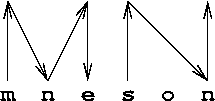

Mneson is a developing 100% Ada database system. All Mneson releases include the full source code of the library and example programs, including an interactive tool. Some releases include executables for Windows, Linux, or both. All recent releases include the manual and the webpage.
Related links: the Charles Project Home at Tigris.org supersedes (?) the Charles Container Library page at Earthlink.com. Both sites include releases of AI302. Dated on Earthlink, updated and under version control (?) on Tigris. The Ada 2005 standard containers are defined in AI-302/3 version 1.1